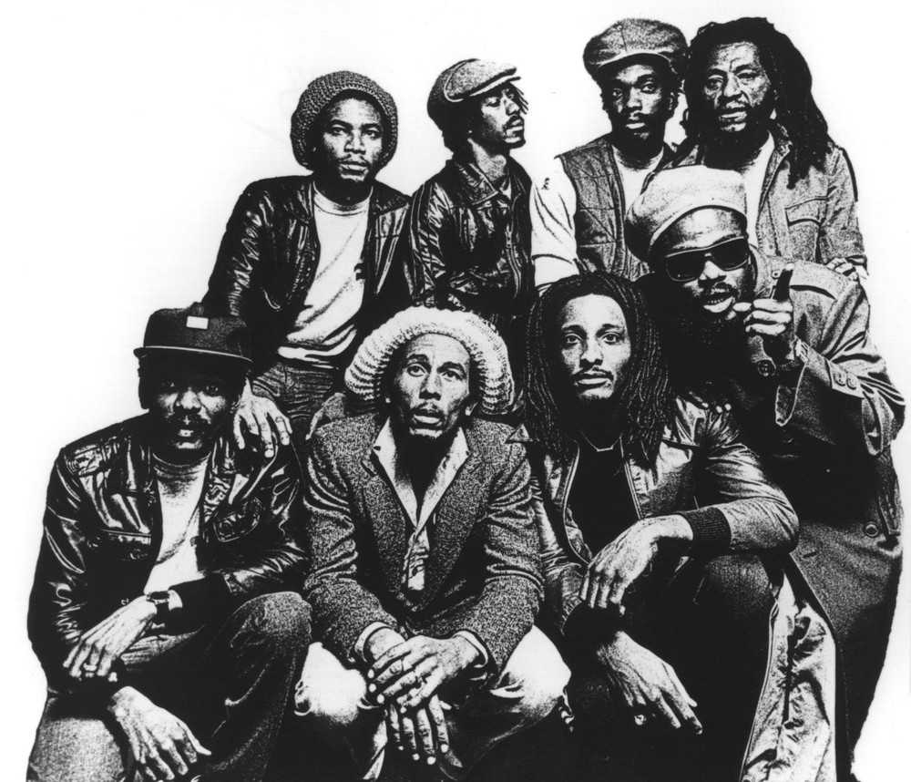

¿Que es?
Es un género musical que se desarrolló por primera vez en Jamaica hacia mediados de los años 1960. Aunque en ocasiones el término se utiliza de modo amplio para referirse a diferentes estilos de música jamaiquina, por reggae se entiende en sentido estricto un género musical específico que se originó como desarrollo de otros anteriores como el ska y el rocksteady.
Caracteristicas:
El reggae se caracteriza rítmicamente por un tipo de acentuación del off-beat, conocida como skank. Normalmente, el tiempo del reggae es más lento que el del ska3 y el rocksteady. El reggae suele acentuar el segundo y cuarto pulso de cada compás, y utiliza la guitarra para poner o bien énfasis en el tercer pulso o para mantener el acorde desde el segundo hasta el cuarto. Es generalmente este "tercer beat", tanto por la velocidad como por la utilización de complejas líneas de bajo, lo que diferencia al reggae del rocksteady.
Considerado el padre de este estilo musical, fue un compositor, cantante y guitarrista que inició su carrera a mediados de los años 60 y se hizo famoso una década más tarde, cuando lanzó junto con The Wailers el album titulado “Soul Rebels“. Esta leyenda del reggae murió en el año 1981 a causa de un melanoma.

Particularidades:
Entre las particularidades del reggae, se destaca su fuerte vínculo con cuestiones que no tienen que ver con la música. El reggae suele asociarse a la corriente rastafari, cuyos seguidores creen que Haile Selassie I (último emperador de la nación etíope) es la reencarnación de Dios (a quien conocen como Jah). De acuerdo a este movimiento, las personas afros y sus descendientes serán guiados a la tierra prometida denominada Monte Zion.